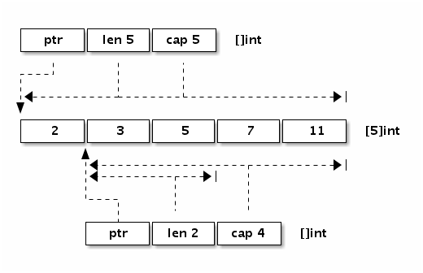

简介
简单地说，切片就是一种简化版的动态数组。Go 数组的长度不可改变，而切片长度是不固定，切片的长度自然也就不能是类型的组成部分了。数组虽然有适用它们的地方，但是数组的类型和操作都不够灵活，因此在Go代码中数组使用的并不多。而切片则使用得相当广泛，理解切片的原理和用法是一个Go程序员的必备技能。当进行append与copy函数操作时会对真实数据进行内存拷贝，append的时长度len超过申请的空间cap进行内存真实拷贝
初始化
package main
import "fmt"
func main() {
// 第一种方式 对比数组不指定size大小
var slice1 = [] int{1,2,3,4}
// 第二种方式
slice2 := [] int{1,2,3,4}
// 第三种方式 make生成空切片
var slice3 []int = make([]int,3,5)
// 第四种方式 简写 len=3 cap=5
slice4 := make([]int,3,5)
fmt.Println(slice1)
fmt.Println(slice2)
fmt.Println(slice3)
fmt.Println(slice4)
}
//[1 2 3 4]
//[1 2 3 4]
//[0 0 0]
//[0 0 0]
数据结构
我们先看看切片的结构定义，reflect.SliceHeader：
type SliceHeader struct {
// 指向数组内存地址 赋值时拷贝的是数组地址
Data uintptr
// 长度
Len int
// 申请空间
Cap int
}可以看出切片的开头部分和Go字符串是一样的，但是切片多了一个Cap成员表示切片指向的内存空间的最大容量（对应元素的个数，而不是字节数）。下图是x := []int{2,3,5,7,11}和y := x[1:3]两个切片对应的内存结构。

赋值、切片与copy
赋值等同于把结构体SliceHeader 内的变量拷贝了一份，并未进行真实数据拷贝， Data与初始切片指向的是同一块内存地址
package main
import "fmt"
func main() {
a := [] int{1,2,3,4}
b := a
// Data ptr指向的内存地址一致
fmt.Printf("a[0] %p\n",&a[0])
fmt.Printf("b[0] %p\n",&b[0])
// 修改元素值相互影响
b[0] = 10
fmt.Println(a)
fmt.Println(b)
}
//a[0] 0xc000054140
//b[0] 0xc000054140
//[10 2 3 4]
//[10 2 3 4]切片时，新生成的切片Data指向初始切片位置元素的内存地址，对元素值进行修改时，相互影响
package main
import "fmt"
func main() {
a := [] int{1,2,3,4}
b := a[:]
// 全切片时Data ptr指向a的第一个元素的内存地址
fmt.Printf("a[0] %p\n",&a[0])
fmt.Printf("b[0] %p\n",&b[0])
// 修改元素值相互影响
b[0] = 10
fmt.Println(a)
fmt.Println(b)
}
//a[0] 0xc000054140
//b[0] 0xc000054140
//[10 2 3 4]
//[10 2 3 4] copy函数进行操作时，会对真实数据进行内存拷贝，新的切片Data指向新的地址
package main
import "fmt"
func main() {
a := [] int{1,2,3,4}
b := make([]int, len(a), cap(a))
copy(b,a)
// Data ptr指向的新的内存地址
fmt.Printf("a[0] %p\n",&a[0])
fmt.Printf("b[0] %p\n",&b[0])
// 修改元素值相互不影响
b[0] = 10
fmt.Println(a)
fmt.Println(b)
}
//a[0] 0xc000054140
//b[0] 0xc000054160
//[1 2 3 4]
//[10 2 3 4]
添加元素
内置的泛型函数append可以在切片的尾部追加N个元素：
package main
import "fmt"
func main() {
var a []int
// 追加1个元素
a = append(a, 1)
// 追加多个元素, 手写解包方式
a = append(a, 1, 2, 3)
// 追加一个切片, 切片需要解包
a = append(a, []int{1,2,3}...)
fmt.Println(a)
}
//[1 1 2 3 1 2 3]
不过要注意的是，在容量不足的情况下，append的操作会导致重新分配内存，可能导致巨大的内存分配和复制数据代价。即使容量足够，依然需要用append函数的返回值来更新切片本身，因为新切片的长度已经发生了变化。
除了在切片的尾部追加，我们还可以在切片的开头添加元素：
package main
import "fmt"
func main() {
var a = []int{1,2,3}
// 在开头添加1个元素
a = append([]int{0}, a...)
// 在开头添加1个切片
a = append([]int{-3,-2,-1}, a...)
fmt.Println(a)
}
//[-3 -2 -1 0 1 2 3]
在开头一般都会导致内存的重新分配，而且会导致已有的元素全部复制1次。因此，从切片的开头添加元素的性能一般要比从尾部追加元素的性能差很多。
由于append函数返回新的切片，也就是它支持链式操作。我们可以将多个append操作组合起来，实现在切片中间插入元素：
package main
import "fmt"
func main() {
var a []int
// 在第i个位置插入x
a = append(a[:i], append([]int{x}, a[i:]...)...)
// 在第i个位置插入切片
a = append(a[:i], append([]int{1,2,3}, a[i:]...)...)
}
//[-3 -2 -1 0 1 2 3]
append与内存地址变化
当指向append操作时，会对切片的真实数据进行内存拷贝，与初始切片互不影响
package main
import "fmt"
func main() {
a := [] int{1,2,3,4}
b := append(a, 5)
// 执行append时 Data ptr指向全新的内存地址
fmt.Printf("a[0] %p\n",&a[0])
fmt.Printf("b[0] %p\n",&b[0])
// 修改元素值相互不影响
b[0] = 10
fmt.Println(a)
fmt.Println(b)
}
//a[0] 0xc000054140
//b[0] 0xc00006e100
//[1 2 3 4]
//[10 2 3 4 5]
删除元素
利用切片和append操作组合进行删除
package main
import "fmt"
func main() {
a := []int{1, 2, 3, 4, 5}
// 删除尾部1个元素
a = a[:len(a)-1]
fmt.Println(a)
// 删除头部1个元素
a = a[1:len(a)]
fmt.Println(a)
// 删除中间一个元素
a = append(a[:1],a[2:]...)
fmt.Println(a)
}
//[1 2 3 4]
//[2 3 4]
//[2 4]
函数传参
切片作为参数传递是，与赋值一致，只拷贝了结构体中的变量，Data指向的是同一块地址
package main
import "fmt"
func change(list []int){
// 拷贝了 Data ptr指向的内存地址
fmt.Printf("list %p\n",&list[0])
// 对切片进行修改
list[0] = 100
}
func main() {
list := [] int{1,2,3,4}
fmt.Printf("list %p\n",&list[0])
change(list)
// slice 受影响
fmt.Println(list)
}
//list 0xc000054140
//list 0xc000054140
//[100 2 3 4]
Cap超出时才会重新内存分配
package main
import "fmt"
func main() {
slice := []int{1,2,3,4}
slice1 := slice
slice2 := append(slice[:2],5)
fmt.Println(slice2)
fmt.Println(slice1)
fmt.Println(&slice2[2])
fmt.Println(&slice1[2])
}
//[1 2 5]
//[1 2 5 4]
//0xc00000e370
//0xc00000e370